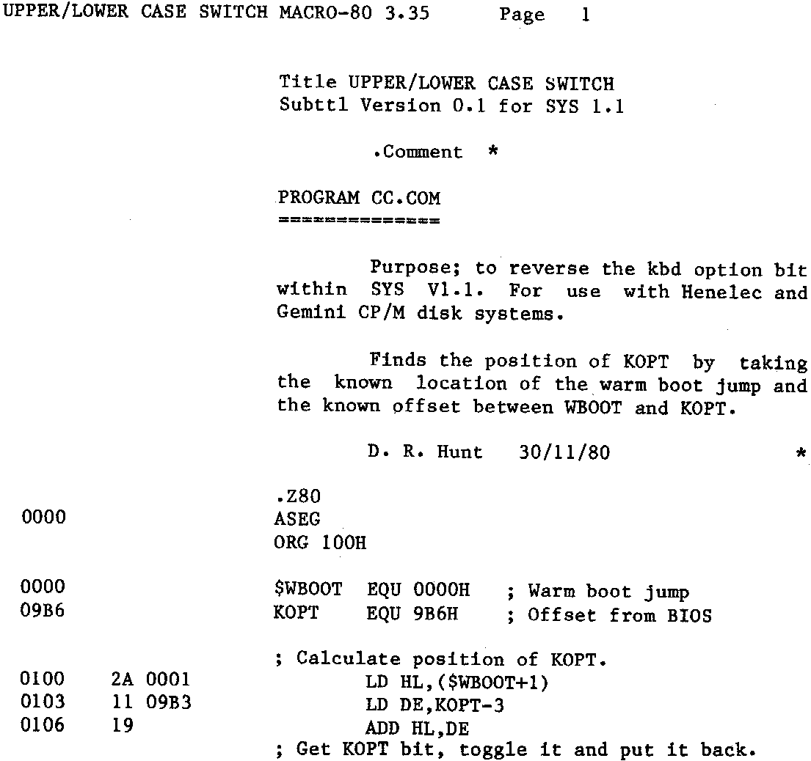

INMC 80 News |
September 1980 – January 1981 · Issue 2 |
| Page 14 of 59 |
|---|
imaginable you are going to have to edit it.
Although this little piece has been written with the Gemini system in mind, it applies equally to the other two (assuming that Comp and Airamco have written the CBIOS correctly). We doubt that the serial input looks at CON:, but it should look at RDR:, so substitute RDR: for CON: in the above command.
Another little point which applies generally to CP/M 1.4 is that files are written and read in 16K chunks known as extents. Now what is not obvious is that if a program is greater that 16k, ie: more than 1 extent, then when reading a program back, CP/M has return to the directory to find the location of the next extent. Whilst its there, CP/M writes a flag into the directory to tell it its gone on to the next extent. If you write protect a disk then you won’t be able to read files which are larger than 1 extent as CP/M won’t be able to write the flag into the directory.
With the Gemini system, it can’t have escaped your notice that the keyboard option defaults to lower case when using SYS.COM. We think Richard did it because he liked it, and after a time I now prefer it, however, it can be a pain at times. ED has a funny quirk with the ‘I’ command which even though the ‘V’ option has been selected to lower case, it will only input lower case if the ‘I’ command was given in lower case. A Digital Research bug ??? Another case in point is the Microsoft MACRO-80 assembler which will only accept commands in upper case, yet Microsoft’s LINK-80 will accept either. Confusing ain’t it. Dear old RB having decided to default the keyboard option to lower case, didn’t leave any way of changing it. In the end I was forced to find out how it worked and came up with this stupid little .COM file. Enter it under DDT and then SAVE it.
| Page 14 of 59 |
|---|